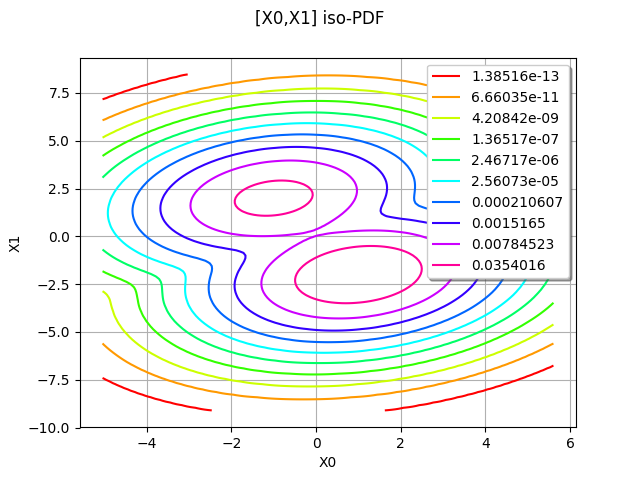
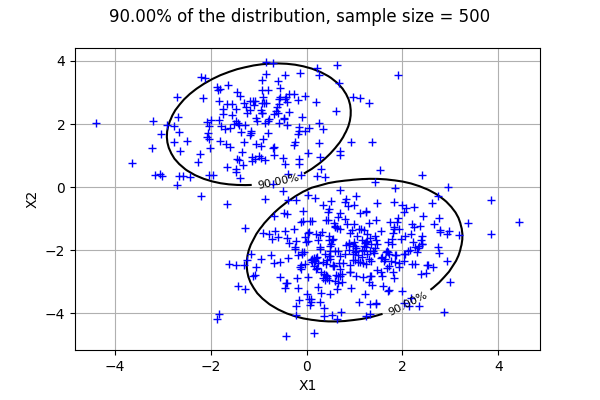

Draw minimum volume level set in 2D¶
In this example, we compute the minimum volume level set of a bivariate distribution.
[1]:
import openturns as ot
[2]:
# Create a gaussian
corr = ot.CorrelationMatrix(2)
corr[0, 1] = 0.2
copula = ot.NormalCopula(corr)
x1 = ot.Normal(-1., 1)
x2 = ot.Normal(2, 1)
x_funk = ot.ComposedDistribution([x1, x2], copula)
# Create a second gaussian
x1 = ot.Normal(1.,1)
x2 = ot.Normal(-2,1)
x_punk = ot.ComposedDistribution([x1, x2], copula)
# Mix the distributions
mixture = ot.Mixture([x_funk, x_punk], [0.5,1.])
[3]:
mixture.drawPDF()
[3]:

For a multivariate distribution (with dimension greater than 1), the computeMinimumVolumeLevelSetWithThreshold uses Monte-Carlo sampling.
[4]:
ot.ResourceMap.SetAsUnsignedInteger("Distribution-MinimumVolumeLevelSetSamplingSize",1000)
We want to compute the minimum volume LevelSet which contains alpha=90% of the distribution. The threshold is the value of the PDF corresponding the alpha-probability: the points contained in the LevelSet have a PDF value lower or equal to this threshold.
[5]:
alpha = 0.9
levelSet, threshold = mixture.computeMinimumVolumeLevelSetWithThreshold(alpha)
threshold
[5]:
0.008629500721285885
[6]:
def drawLevelSetContour2D(distribution, numberOfPointsInXAxis, alpha, threshold, sampleSize= 500):
'''
Compute the minimum volume LevelSet of measure equal to alpha and get the
corresponding density value (named threshold).
Generate a sample of the distribution and draw it.
Draw a contour plot for the distribution, where the PDF is equal to threshold.
'''
sample = distribution.getSample(sampleSize)
X1min = sample[:, 0].getMin()[0]
X1max = sample[:, 0].getMax()[0]
X2min = sample[:, 1].getMin()[0]
X2max = sample[:, 1].getMax()[0]
xx = ot.Box([numberOfPointsInXAxis],
ot.Interval([X1min], [X1max])).generate()
yy = ot.Box([numberOfPointsInXAxis],
ot.Interval([X2min], [X2max])).generate()
xy = ot.Box([numberOfPointsInXAxis, numberOfPointsInXAxis],
ot.Interval([X1min, X2min], [X1max, X2max])).generate()
data = distribution.computePDF(xy)
graph = ot.Graph('', 'X1', 'X2', True, 'topright')
labels = ["%.2f%%" % (100*alpha)]
contour = ot.Contour(xx, yy, data, ot.Point([threshold]), ot.Description(labels))
contour.setColor('black')
graph.setTitle("%.2f%% of the distribution, sample size = %d" % (100*alpha,sampleSize))
graph.add(contour)
cloud = ot.Cloud(sample)
graph.add(cloud)
return graph
The following plot shows that 90% of the sample is contained in the LevelSet.
[7]:
numberOfPointsInXAxis = 50
drawLevelSetContour2D(mixture, numberOfPointsInXAxis, alpha, threshold)
[7]:

[ ]: